Marlin P. Strub
Roboticist and C++ enthusiast
Interests
My primary research interests are path planning and control algorithms. I'm passionate about and have experience in algorithm design, analysis, implementation, evaluation, and deployment. The two deployments I was most heavily involved in so far are summarized below. I'm proud and humbled that my work has been useful to others. Some of my favorite examples of this include when researchers from
- CMU and Mistral AI used AIT* with LLMs for robotic tasks (paper)
- The University of Oxford used AIT* on their drone (paper, video)
- MIT used AIT* to create training data for ML-based planning (paper)
- JPL used ABIT* on the wheel-on-limb robot RoboSimian (paper, video)
- Nagoya University used AIT* for minimally invasive surgery (paper)
Real-world deployments
I have deployed my research on two of NASA/JPL's coolest subjectively most interesting rover prototypes: Axel and EELS. Here are short project-overviews that focus on my contributions and contain links to further information.
Axel
Some of the most interesting science targets of planetary exploration are located on steep slopes beyond the reach of the currently-deployed rovers. Examples of such targets include lava-tubes on the Moon, meteor-craters on Mars, and ice-crevasses on Enceladus. Axel is a rappelling rover-prototype that is designed to navigate such terrains and carry scientific payloads to study them. Here's a video that describes the system and a possible mission scenario.
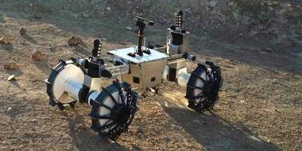
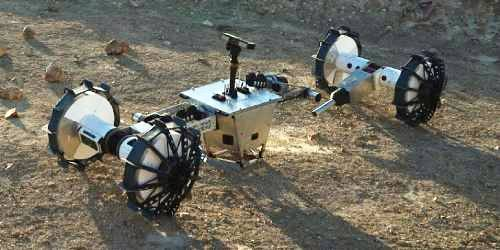
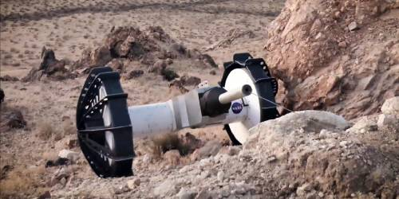
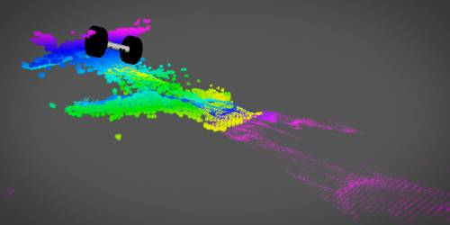
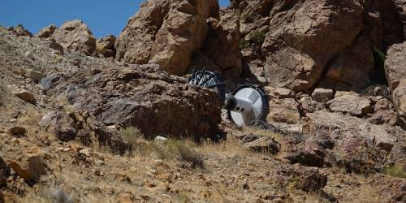
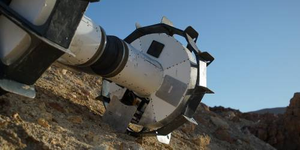
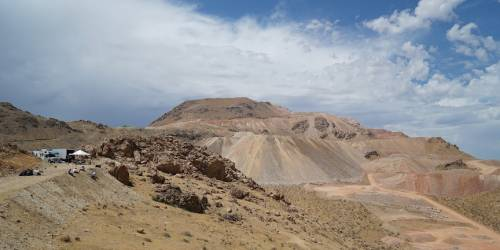
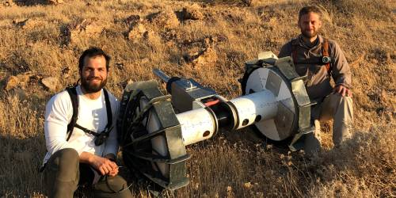
While Axel presented the team with various challenges, my work was focused on its autonomy stack. My primary contribution was formulating the path-planning problem in a way that can be solved by sampling-based planning algorithms, e.g., ABIT*, which I had previously developed.
The main challenge in doing so was due to Axel's tether. When planning paths for Axel, we made ABIT* analyze the static stability of each state using gravity-, tether- and ground-reaction-forces. The tether-force at any given state depends on where the tether most recently anchored to the ground, which in turn depends on the path Axel took to that state. These types of non-Markovian problems must be handled with care in any sampling-based planning algorithm. Our IROS 2020 paper presents an approach that includes the relevant state history in the state space. This idea is not limited to ABIT*, but can be applied to any sampling-based algorithm.
EELS
Enceladus, a small moon of Saturn, has large water plumes at its south pole. They are thought to be connected to a global ocean underneath Enceladus' icy surface and make Enceladus a prime target for the search of extraterrestrial life. Unfortunately, Enceladus is relatively far away and a lot about its surface is still uncertain. One way to deal with this uncertainty is to develop a system that is capable of adapting to many different surfaces. This is the fundamental idea of EELS, a snake-like robot with active skin (actuated screws) that is being developed at JPL. Here's a video that describes the system and the concept of operations, and here's another video that showcases some early results.
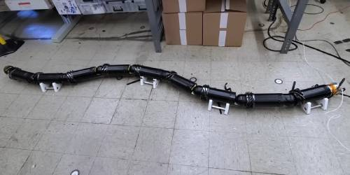
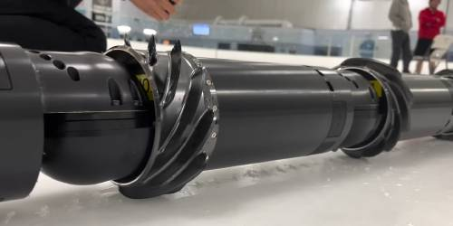
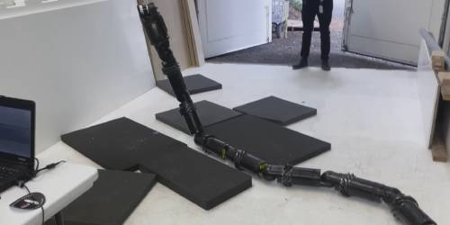
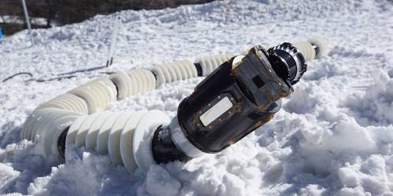
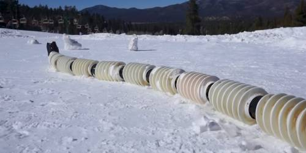
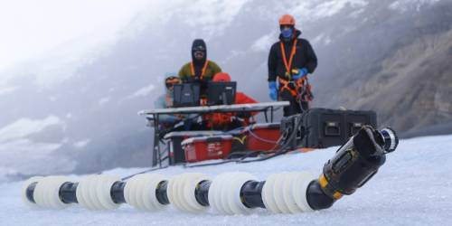
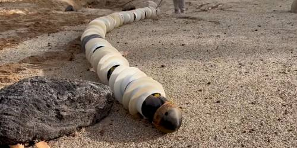
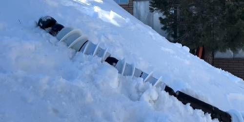
EELS allowed us to work on many open research questions. My main contribution to EELS was leading the path-planning effort, but I also designed and implemented the base architecture for the control module.
The simplest mode of locomotion for surface operations we came up with was a leader-follower gait. I implemented a curve-fitting controller that takes in a 3D trajectory and the percentage of an anchor module along that trajectory and returns the shape-joint positions by sequentially computing inverse kinematics starting from the anchor module. This controller worked with a screw-velocity allocator to keep EELS progressing along the 3D trajectory. The full details of this approach are in our 2023 IROS paper.
Designing planning algorithms for subsurface operations was challenging because it required to: 1) deal with many degrees of freedom, 2) analyze static stability based on online mapping and imperfectly-understood screw-ice interactions, and 3) constantly adapting the planner because we concurrently developed the subsurface control code, which kept changing what types of paths the we can actually track. We came up with controller-based projections which allowed us to address the high dimensionality and the constantly changing controllers and also gave us confidence that we could handle inaccurate maps, although we unfortunately ran out of time to validate this idea in the field. We are working on a paper that describes this approach in detail.